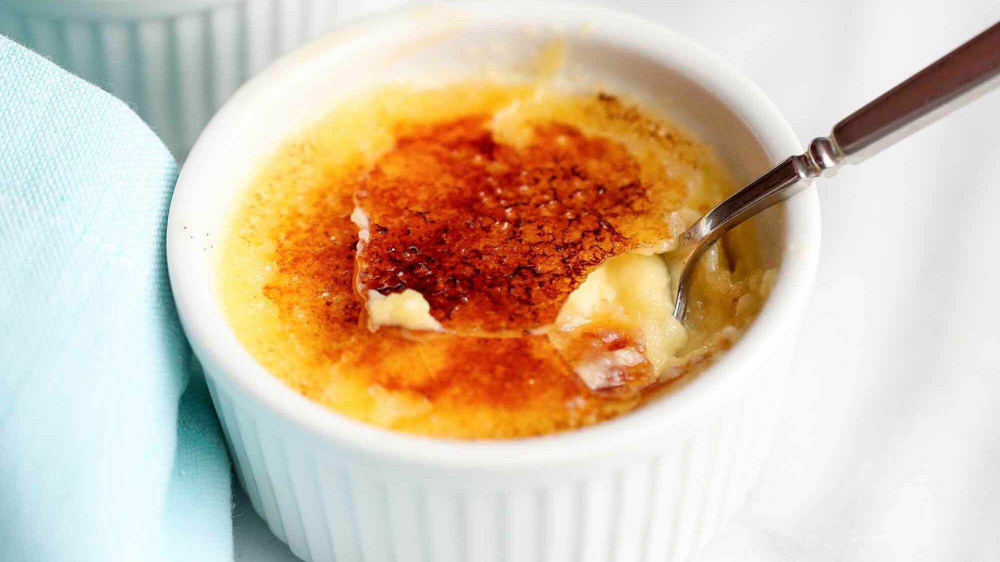

Düğünlerde, doğumgünlerinde misafirlerinize ikram edebileceğiniz kolay mı kolay bir Fransız tatlısı!
Süt ve kremayı karıştırıp kaynaması için ocağa koyun. Bu esnada yumurta sarıları,vanilya özütü ve şekeri içindeki şeker iyice eriyinceye kadar çırpın. Kaynayan karışımı yumurta ve şekere azar azar ekleyerek karıştırın. Karışımı içinde hiç bir kalıntı kalmaması için iki kez süzün. Süzdüğünüz karışımı en az on dakika dinlendirin bu süreyi köpük tamamen çökene kadar uzatabilirsiniz. Son kalan köpükleri de kaşıkla alıp karışımı çok derin olmayan fırın kaplarına paylaştırın. Fırın kaplarını içine temiz bir bez serdiğiniz derin bir tepsiye yerleştirin. Varsa ufak köpükleri de peçete yardımı ile alın. Tepsiye kapların yarısına gelecek kadar sıcak su koyup 125 derecelik fırında 35-40 dakika pişirin. Fırından çıkan tatlılar hala hafifçe yumuşak olmalı. Tatlılar önce oda sıcaklığında soğutulup sonrasında en az üç saat buzdolabında dinlendirilmeli. Soğuyan ve dinlenen tatlıların üzerine ince bir katman halinde şeker serpin ve pürmüz yardımı ile yakın. Karamel katmanı tekrar sertleşene kadar beş dakika bekleyin. Pürmüzünüz yoksa şekeri tavada eritip ince bir katman halinde tatlınızın üzerine dökebilirsiniz.